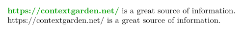
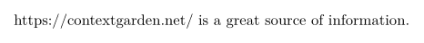
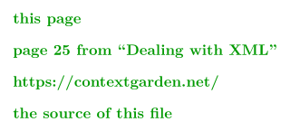

Contents
The \setupinteraction command configures all interaction in the resulting PDF document. Basic interaction (meaning clickable links for references) is enabled using
\setupinteraction[state=start]
This makes all links generated with the \goto command (and indirectly the \in and \at commands) clickable. A page is dedicated to this system of References.
Link coloring
By default, the link text gets a green or red color, depending on whether the link is to another page or to the same page. You can change the link colors with the color (links to other pages) and contrastcolor (links to the same page) properties. Link style is by default set to bold.
For example, to disable link highlighting altogether:
-
\startTEXpage[offset=1dk] \setupinteraction[state=start] \goto{https://contextgarden.net/}[url(https://contextgarden.net/)] is a great source of information. \setupinteraction[state=start,color=,contrastcolor=, style=,] \goto{https://contextgarden.net/}[url(https://contextgarden.net/)] is a great source of information. \stopTEXpage
- 
Alternative link highlighting
There is an alternative way of highlighting interactive links, by adding a colored border to the link text, such as in:
-
\startTEXpage[offset=1dk] \setupinteraction[state=start,color=,contrastcolor=, style=,] \enabledirectives[references.border=darkgreen] \goto{https://contextgarden.net/}[url(https://contextgarden.net/)] is a great source of information. \stopTEXpage
- 
This is a special PDF feature (a link annotation border), not just a frame added to the link text.
Depending on your PDF viewer, these link annotation borders may be displayed and/or printed.
According to the specification, the links generated by ConTeXt are only to be displayed, not to be printed.
Just in case you wonder, this feature comes handy in order to have exactly the same PDF document in print and on screen.[1]
Clickable table of contents
To make table of contents items clickable, use the \setupcombinedlist command.
\setupcombinedlist[content][interaction=all]
This makes the entire table of contents line clickable. It is possible to select just one part (sectionnumber, pagenumber, text).
If links have a color, this will also make the table of contents get a different text color. You can use the color property to change it back, e.g.:
\setupcombinedlist[content][interaction=all,color=black]
Alternatively, you can use the textcolor property to change just the text colour, and leave the section and page numbers colored.
Default focus mode
By default, clicking an inter-document hyperlink will switch to "fit page" mode, to override this:
\setupinteraction[state=start,focus=standard]
Named destinations (and links to them)
Having other focus value than tight or the default (fit), gives PDF named destinations (which allow direct links to those destinations).
With the following code, the links to named destinations would read:
\setupinteraction[state=start, focus=standard, prefix=_] \starttext \completecontent \dorecurse{25} {\section{Section} a\footnote{}} \stoptext
- Link to a section: https://wiki.contextgarden.net/images/1/14/nameddest.pdf#nameddest=_62 .
- Link to the last footnote in the document: https://wiki.contextgarden.net/images/1/14/nameddest.pdf#nameddest=_75 .
PDF Bookmarks
Quick start
For the impatient (like me), here is a complete example showing typical and useful commands, which are explained below:
\setupinteraction[state=start] % don't forget this line! % make chapter, section bookmarks visible when opening document \placebookmarks[chapter,section,subsection][chapter,section] \setupinteractionscreen[option=bookmark] % expand macros in bookmarks \enabledirectives[references.bookmarks.preroll] \starttext \startchapter[title=The beginning] Hi! \stopchapter \startchapter[title={A very, very\\long title}] Greetings! \startsection[title=Why so long] I don't know \startsubsection[title=Why not?] Good point. \stopsubsection \stopsection \stopchapter \startchapter[title=The never-ending story] Oh no. \stopchapter \startchapter[title=The never-ending story, bookmark=Forever!] Oh no. \stopchapter \stoptext
It’s important to note that ConTeXt LMTX expands macros in bookmarks and document metadata fields.
Explanation
You need to activate the interaction handling in order to see the bookmarks using \setupinteraction.
\setupinteraction [state=start]
The bookmarks window is usually not visible by default. To have the bookmark window open automatically when the document is opened:
\setupinteractionscreen [option=bookmark]
Disclaimer: \setupinteraction works with Adobe Reader/Acrobat, but other PDF viewers behave differently. E.g. xpdf v3.01 always opens the bookmark window.
To get bookmarks for chapters, sections, and subsections, use:
\placebookmarks[chapter,section,subsection]
In the bookmark window, only chapter bookmarks are visible by default. If chapter and section bookmarks should be visible:
\placebookmarks [chapter,section,subsection] [chapter]
This will open the document with the bookmarks for chapters and sections visible (read as: and open up the chapter bookmarks)
If your titles contain TeX commands or braces, you can choose to expand macros in bookmarks (not required in LMTX):
\enabledirectives[references.bookmarks.preroll]
If you want the same document metadata (again, not required in LMTX), you can expand macros here, too:
\def\title{Some \emph{title}!} \setupinteraction[title=\title, subtitle=..., author=...] \enabledirectives[interaction.identity.preroll]
The unnumbered headings (\title, \subject etc.) do not create bookmarks, even when listed in \placebookmarks.
In order to create the bookmarks, you need to add force=yes, for example like this:
\placebookmarks [title, subject] [force=yes]
If you do not like seeing the structure numbering in the bookmarks, you can add number=no, like this:
\placebookmarks [chapter,section] [chapter] [number=no]
Unwanted output
With a long heading in a huge font, you might want to add linebreaks by hand. No problem, just use \\. The bookmark code ignores \\, so the bookmark itself won't have a linebreak. For example:
\setupinteraction[state=start] \placebookmarks[chapter] \setupinteractionscreen[option=bookmark] \starttext \startchapter[title=Long\\ title] hello \stopchapter \stoptext
ConTeXt attempts to replace commands inside bookmarks with an acceptable string. However, the result is not always optimal. To tweak ConTeXts behaviour, add specific commands to \simplifiedcommands.
For example, to replace the \CONTEXT logo (which would normally become CONTEXT) with a camel-cased version, use the following:
\appendtoks \def\CONTEXT{ConTeXt} \to \simplifiedcommands
A more general method, also usable for the above problem, is to use the bookmark option to specify the bookmark text explicitly. For example:
\setupinteraction[state=start] \placebookmarks[chapter] \setupinteractionscreen[option=bookmark] \starttext \startchapter[title=A very long chapter\\ about splines, bookmark=Splines] hello \stopchapter \stoptext
| ConTeXt Mkii (deprecated) notes (See: Mkii): In mkii, such manual bookmarks used the \bookmark command on a separate line following a \chapter command. With the new \startchapter command, this is no longer needed, nor recommended. |
Private bookmarks
We can also place our own list of bookmarks:
\setupinteraction [state=start] \setupinteractionscreen [option=bookmark] \definelist [mylist] \placebookmarks [chapter,mylist] [chapter,mylist] \starttext \startchapter[title={My title}] \input knuth\page \bookmark[mylist]{Before input zapf}\input zapf \stopchapter \stoptext
XML source
When processing XML input file information in TUC file is stored as the XML command with the reference to XML node
["titledata"]={ ["label"]="section", ["title"]="\\xmlatt{xml:name::4}{title}", ["userdata"]={ ["usertitle"]=\\xmlatt{xml:name::4}{title}, }
You have to expand the information to get the text in TUC file and subsequently in bookmarks by modifying sections:
\setuphead [section] [expansion=yes]
To expand userdata also, you can use \normalexpanded{\startsection[..,..=..,..][..,..=..,..]} instead of expansion=yes. They are not in conflict.
\normalexpanded{\startsection[title=\\xmlatt{xml:name::4}{title}, bookmark=\\xmlatt{xml:name::4}{title}] [usertitle=\\xmlatt{xml:name::4}{title}]} ... \stopsection
PDF Headers and Custom Properties
In order to add Author, Title, Keywords, ... to PDF headers, use:
\setupinteraction [state=start, title={...}, author={...}, subtitle={...}, keyword={...}]
In order to add custom key-value properties in the PDF Document, use:
\pdfbackendsetinfo{foo}{bar}
Prevent certain characters from appearing in pdf headers
To ignore certain TeX commands in \setupinteraction add them to \simplifiedcommands. For example, to ignore \quad in pdfauthor, use the following (again, this is default in LMTX):
\appendtoks \let\quad\space \to \simplifiedcommands \setupinteraction [author={Author1\quad Author2}]
| ConTeXt Mkii (deprecated) notes (See: Mkii): Accented characters like ä, č, ... will turn into their unaccented counterparts a, c, ... by default. If you want to prevent that, use \input spec-tst
For example \enableregime[utf] \setupinteraction [state=start] \setupinteractionscreen [option=bookmark] % before \placebookmarks \input spec-tst.tex \placebookmarks [chapter,section,subsection] [chapter] ... and here is your document with accented characters in titles & bookmarks ... |
Import PDF metadata fields from other PDF documents
Inspired by a mailing list reply from Hans, here is a minimal sample:
\starttext \startluacode function document.transfer_metadata(name) local main_doc = lpdf.epdf.load(name) lpdf.addtocatalog("Lang", lpdf.unicode(main_doc.Catalog.Lang), lpdf.string(main_doc.Catalog.Lang)) context.setupinteraction{ title = main_doc.Info.Title } context.setupinteraction{ subtitle = main_doc.Info.Subject } context.setupinteraction{ author = main_doc.Info.Author } lpdf.epdf.unload(name) end \stopluacode \unexpanded\def\TransferMetadata#1% {\ctxlua{document.transfer_metadata("#1")}} \null \TransferMetadata{name.pdf} \stoptext
It also imports language to the PDF document (not to the document language).
Further reading
- URL : typesetting of URLs references.
- Presentations , Presentation styles , Macros for presentation with steps , Presentation effects
- Widgets (interactive elements, form fields etc.) and Interaction and button
- See in Using graphics how to use movies.
- Including audio and video describes how to add audio and video files.
Footnotes
-
↑
If you have a ConTeXt version from 2024 (as the wiki doesn’t have at the time of writing), there is also a way to distinguish border colors according to link types, such as in:
-
\starttext \setupinteraction[state=start] \definecolor[internal][x=00cc00] \definecolor[external][x=0000cc] \definecolor[urls][x=cc0000] \definecolor[programs][x=000000] \enabledirectives[references.border=internal] \enabledirectives[references.border=inner:internal] \enabledirectives[references.border=special operation+internal:internal] \enabledirectives[references.border=special operation+page:internal] \enabledirectives[references.border=outer:external] \enabledirectives[references.border=outer with inner:external] \enabledirectives[references.border=special outer with operation+page:external] \enabledirectives[references.border=special operation+file:programs] \enabledirectives[references.border=special operation+program:programs] \enabledirectives[references.border=special operation+url:urls] \startTEXpage[offset=1dk] \goto{this page}[page(1)] \blank \goto{page 25 from “Dealing with XML”}[xml-mkiv.pdf::25] \blank \goto{https://contextgarden.net/}[url(https://contextgarden.net/)] \blank \goto{the source of this file}[program(\jobname.tex)] \stopTEXpage \stoptext
- 
The previous sample makes three categories: URLs, internal (parts of the same document), external (parts of other PDF documents), and programs or file (better avoid using these ones, since they might be considered security issues).
Please, consider the following questions before using this feature:
- Since it is not related to typesetting, it is not an official feature in ConTeXt.
- It depends completely on which viewer is being used to display PDF documents.
- In any case, this feature is useless when not used sparingly (too many border colors may confuse users).
-